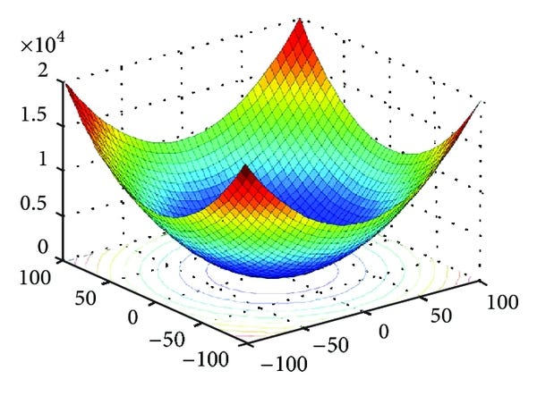
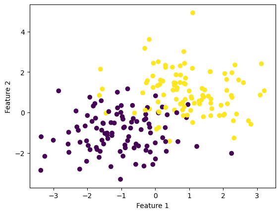
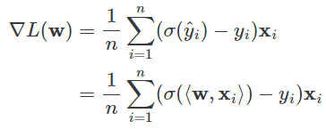
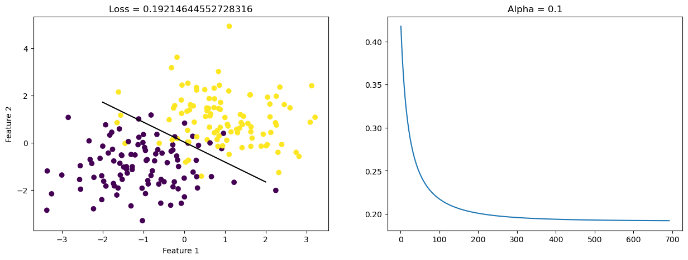
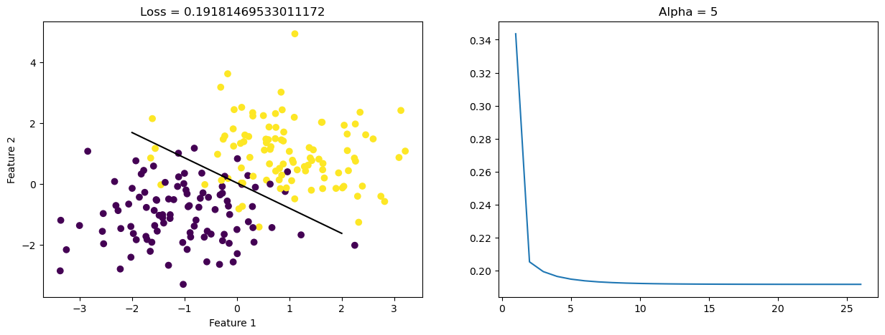
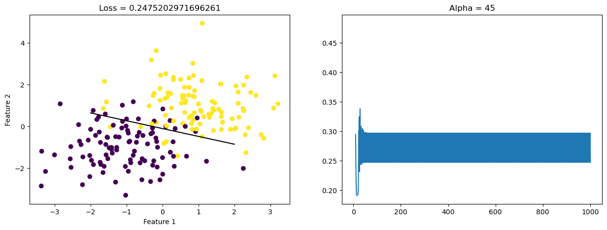
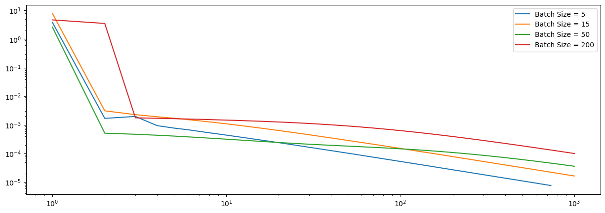

A convex function - in simple terms - can be explained as a function which is “bowl shaped”. The interesting thing about convex functions is that if you keep taking steps towards what feels as “lower ground” - lower value of that convex function - you are ultimately bound to reach the minimum. A property of convex functions is that if there exists a local minima - \(w^*\) - it is also the global minimum - \(w\). Due to this property, we can “greedily” use the Gradient Descent algorithm, and be sure that we are ultimately bound to reach the global mininimum.
In this blog post, we are going to explore three different approaches of Gradient Descent:
Regular Gradient Descent
Stochastic Gradient Descent
Stochastic Gradient Descent with Momentum
We will see how these three different approaches of Gradient Descent perform - how long they take to converge and find the minimum! Furthermore, we will also perform some experiments which will highlight some of the nuances of these approaches.
Here is an image of how a convex function looks, for visualization purposes:

Implementing Gradient Descent
#implementing the necessary packagesfrom LogisticRegression import LogisticRegressionfrom sklearn.datasets import make_blobsfrom matplotlib import pyplot as pltimport numpy as np# logistic regression tends to involve a lot of log(0) and things that wash out in the end. np.seterr(all='ignore')
In the following section, we are using the make_blobs function of sklearn.datasets to create synthetic data for our experimentation. In this case, we are creating two clusters of data, which are centered around two different areas - and have different labels \(0\) and \(1\). These two clusters purposefully have overlap, and are not linearly separable. This means that one cannot imagine a straight line which perfectly divides the data points into two regions - one group or the other.
#arbitrarily setting the seed number to 12345 to ensure reproducibilitynp.random.seed(12345)#setting the number of points we wantn =200#setting the number of featuresfeatures =2#using make_blobs function to create 2 clusters of 200 data points - centered #randomly around (-1,-1) and (1,1) - making them linearly inseparable X, y = make_blobs(n_samples = n, n_features = features, centers = [(-1,-1),(1,1)])
#plotting the clusters generated by the make_blobs functionfig = plt.scatter(X[:,0], X[:,1], c = y)xlab = plt.xlabel("Feature 1")ylab = plt.ylabel("Feature 2")

#creating an instance of the LogisticRegression classLR = LogisticRegression()
We are calling the fit method of the LogisticRegression class. This method uses the logistic loss function to calculate the loss, and updates the weight vector, using the Gradient Descent algorithm. The gradient function for the logistic loss function, has been borrowed from the lecture notes on Gradient Descent!
LR.fit(X, y, 0.1, 1000)
For reference, the code had saved the first weight vector. Therefore, we can visualize how well the first linear classifier performed, and its associated loss.
We can then compare this to the visualization of the final weight vector (after performing gradient descent) - how it performed the linear classification, and its associated loss.
Therefore, we can clearly see how the final set of weight vector (inclusive of bias) has a much less associated loss, and does a much better job at performing the linear classification. This can also be seen visually, by looking at the classification in the image above (with the final weight vector), and the one above it (with the initial - random - weight vector).
Explanation of Important Elements of the Regular Gradient Descent Algorithm
In this section of the blog post, we are going to look at some of the functions which are used in performing our Logistic Regression using Regular Gradient Descent!
fit method:
def fit(self, X, y, alpha, max_epochs):#creating modified feature matrix X_ with column of 1s X_ = np.append(X, np.ones((X.shape[0],1)), axis=1)#initializing random weight vectorsself.w = np.random.rand(X_.shape[1])self.initialW =self.w.copy() #solely for visualization purposes#adding loss+score associated with initialized weight vector to respective vectorsself.loss_history.append(self.loss(X_,y))self.score_history.append(self.score(X_,y)for i inrange(max_epochs):#updating the weight vector - the gradient descent update gradient =self.gradient_logistic_loss(X_, y)self.w -= alpha*gradient#appending the loss and score for the updated weight vectorself.loss_history.append(self.loss(X_,y))self.score_history.append(self.score(X_,y))#checking the conditions to terminate the loop - when overall improvement is minimum#comparing the latest added loss_history with the second_latest added loss_historyif np.isclose(self.loss_history[-1], self.loss_history[-2]):break
The above mentioned method is the main one, which is called to perform gradient descent, and find the optimal parameters of the weight vector \(w\) - which minimizes our loss - using logistic loss! In the above function, first we pad the feature matrix \(X\) with a column of \(1\)s. This is done to ease the mathematics we perform, as this allows us to include the bias in the weight vector - \(w\) - and perform matrix operations. We run the gradient descent algorithm for max_epochs, which is the maximum number of steps that the user provides us. Another situation in which we break the loop is provided in the line:
if np.isclose(self.loss_history[-1], self.loss_history[-2]):break
That is, when the overall improvement in the previous and current losses is extremely low - it is a good time to stop performing gradient descent.
The above mentioned method is the loss method aka the Empirical Risk function! We first get a predicted vector y_hat for the \(n\) data points. An important thing to note is that for the prediction vector, we use the actual values of the \(\text{X}@\text{self.w}\), rather than converting them to \(0\)s and \(1\)s - as we do in our predict function. This is because the logistic loss function’s genius lies on the actual values of our prediction, and converting to \(0\)s and \(1\)s would rid us of the range of ways in which our prediction affects the loss!
gradient_logistic_loss method:
def gradient_logistic_loss(self, X, y):#using the actual predictions - rather than 0s and 1s #to utilize the potential of the logistic loss function y_hat = X@self.w tempYDifference =self.sigmoid(y_hat) - y output = np.zeros((X.shape[1],))for i inrange(X.shape[0]): output+=np.dot(tempYDifference[i], X[i]) output = output/X.shape[0]return output
This is arguably the most important function in the entire implementation of the Gradient Descent algorithm, as it forms the backbone for the entire update. Using multivariable calculus, it was found that the gradient of the logistic loss function is:

Source - Philip Chodrow (Lecture Notes on Gradient Descent 02/22)
Therefore, we first get y_hat prediction vector - again the actual values, rather than \(0\)s and \(1\)s - to use the range of values in our predictions. Now, the mathematical idea is that for each value of \(\sigma(\hat y_i) - y_i\), we want to multiply it by the corresponding row of the feature matrix \(X\), that is \(X_i\). So, at each stage, we are multiplying a \(1\)x\(1\) value, with a \(1\)x\(p\) row, therefore resulting in a \(1\)x\(p\) row. Then we want to add all these \(n\), \(1\)x\(p\) rows, that is adding the respective elements, and then taking the mean, which at this point is simply division by the number of rows. Therefore, we run a loop which takes the \(i\)th value of \(\sigma(\hat y_i) - y_i\) and does a dot product of that with the \(i\)th row of the feature matrix \(X\). We sum the value of these multiplications for all values of \(i\) - number of rows in the feature matrix \(X\) and then divide the output by the \(X.shape[0]\) - the number of rows in the feature matrix - to get the average. Overall, this means that we are multiplying a \(1\)x\(n\) matrix, with a \(n\)x\(p\) matrix - resulting in a \(1\)x\(p\) matrix - exactly what we want.
Stochastic Gradient Descent
def fit_stochastic(self, X, y, alpha, max_epochs, batch_size, momentum =False):#creating modified feature matrix X_ with column of 1s X_ = np.append(X, np.ones((X.shape[0],1)), axis=1)#initializing random weight vectorsself.w = np.random.rand(X_.shape[1])self.initialW =self.w.copy()#adding loss+score associated with initialized weight vector to respective vectorsself.loss_history.append(self.loss(X_,y))self.score_history.append(self.score(X_,y)#setting the beta value of momentum - based on momentum True or False beta =0if(momentum): beta =0.8#creating a temporary variable which stores the previous weight vector - useful for implementing momentum prevWeightVec =0#setting n as the number of rows - data points - in our feature matrix X_ n = X_.shape[0]#maximum number of time we are cycling through the data - max_epochs #np.arange is similar to range used in above fit functionfor j in np.arange(max_epochs):#creating a list of all possible data points and shuffling order = np.arange(n) np.random.shuffle(order)#this loop goes over the order - total number of rows (data points)#and then creates batches out of those orders, where n (total data points) // batch_size + 1for batch in np.array_split(order, n // batch_size +1): x_batch = X_[batch,:] y_batch = y[batch]#performing the stochastic gradient gradient =self.gradient_logistic_loss(x_batch, y_batch) tempWeightVec =self.wself.w -= (alpha * gradient) + (beta * (self.w - prevWeightVec)) prevWeightVec = tempWeightVec#appending the loss and score for the updated weight vectorself.loss_history.append(self.loss(X_,y))self.score_history.append(self.score(X_,y))#checking the conditions to terminate the loop - when overall improvement is minimumif np.isclose(self.loss_history[-1], self.loss_history[-2]):break
In addition to regular gradient descent, this blog post also implements and looks at the performance of a Stochastic Gradient Descent. Similar, to the regular gradient descent, we still run over the data a fixed number of times - max_epochs. However, in each iteration, instead of passing the complete feature matrix to the gradient function, we randomly pass a subset of certain size - batch size - to the gradient function. We then update the weight using the gradient of this batch size subset passed to the gradient function. We keep on doing this until we have made the updates for all set of points. Therefore, the weight vector \(w\) gets updates multiple times in each epoch based on smaller subsets of the feature matrix and the related true labels. Furthermore, there is also a parameter called momentum in this implementation of the Stochastic Gradient Function, which controls the \(\beta\) parameter. This is done
Evaluating the Performance of All Three Algorithms
Hypothesis:
Stochastic Gradient Descent (with and without Momentum) will converge faster than Regular Gradient Descent. However, once it finds the optimum value - Regular Gradient Descent will “settle down”, while Stochastic Gradient Descent will “bounce around” a little.
Our hypothesis is true, and we can see that the Stochastic Gradient Descent (with and without Momentum) converge faster to the minimizing solution, however they “bounce around” a little bit near the optimum solution. However, Regular Gradient Descent converges slower, but once it finds the optimum it “settles down”.
Effects of \(\alpha\) - Learning Rate - in Finding a Minimum Solution
In this section, we will evaluate the Regular Gradient Descent function - fit - in a 2 feature matrix, and look at how the learning rate - \(\alpha\) - affects the convergence to a minimizer. More specifically, we want to see if a “very large” value of \(\alpha\), can prohibit us from ever converging to a minimum!
#implementing the necessary packagesfrom LogisticRegression import LogisticRegressionfrom sklearn.datasets import make_blobsfrom matplotlib import pyplot as pltimport numpy as np# logistic regression tends to involve a lot of log(0) and things that wash out in the end. np.seterr(all='ignore')
We can use the make_blobs function to create \(200\) data points, with \(2\) features each. Because of this, we can say that \(X\) is a \(200\)x\(2\) matrix.
#arbitrarily setting the seed number to 12345 to ensure reproducibilitynp.random.seed(12345)#setting the number of points we wantn =200#setting the number of featuresfeatures =2#using make_blobs function to create 2 clusters of 200 data points - centered #randomly around (-1,-1) and (1,1) - making them linearly inseparable X, y = make_blobs(n_samples = n, n_features = features, centers = [(-1,-1),(1,1)])
#setting the first value of alphaLR_first = LogisticRegression()LR_first.fit(X, y, alpha =0.1, max_epochs =1000)#setting the size of the figureplt.rcParams["figure.figsize"] = (15,5)#creating two subplotsfig, ax = plt.subplots(1, 2)#plotting the first subplotfig = ax[0].scatter(X[:,0], X[:,1], c = y)xlab = ax[0].set_xlabel("Feature 1") ylab = ax[0].set_ylabel("Feature 2") LR_first.draw_line(LR_first.w, -2, 2, subplot = ax[0])title = ax[0].set_title(f"Loss = {LR_first.loss_history[-1]}") #plotting the second subplotnum_steps =len(LR_first.loss_history)fig = ax[1].plot(np.arange(num_steps) +1, LR_first.loss_history)plt.title("Alpha = 0.1")plt.show()

#setting the first value of alphaLR_second = LogisticRegression()LR_second.fit(X, y, alpha =5, max_epochs =1000)#setting the size of the figureplt.rcParams["figure.figsize"] = (15,5)#creating two subplotsfig, ax = plt.subplots(1, 2)#plotting the first subplotfig = ax[0].scatter(X[:,0], X[:,1], c = y)xlab = ax[0].set_xlabel("Feature 1") ylab = ax[0].set_ylabel("Feature 2") LR_second.draw_line(LR_second.w, -2, 2, subplot = ax[0])title = ax[0].set_title(f"Loss = {LR_second.loss_history[-1]}") #plotting the second subplotnum_steps =len(LR_second.loss_history)fig = ax[1].plot(np.arange(num_steps) +1, LR_second.loss_history)plt.title("Alpha = 5")plt.show()

#setting the first value of alphaLR_third = LogisticRegression()LR_third.fit(X, y, alpha =45, max_epochs =1000)#setting the size of the figureplt.rcParams["figure.figsize"] = (15,5)#creating two subplotsfig, ax = plt.subplots(1, 2)#plotting the first subplotfig = ax[0].scatter(X[:,0], X[:,1], c = y)xlab = ax[0].set_xlabel("Feature 1") ylab = ax[0].set_ylabel("Feature 2") LR_third.draw_line(LR_third.w, -2, 2, subplot = ax[0])title = ax[0].set_title(f"Loss = {LR_third.loss_history[-1]}") #plotting the second subplotnum_steps =len(LR_third.loss_history)fig = ax[1].plot(np.arange(num_steps) +1, LR_third.loss_history)plt.title("Alpha = 45")plt.show()

Therefore, we can clearly see that when we choose a very small \(\alpha\) size = \(0.1\), the Gradient Descent converges, it just takes more time to converge. Then, if we choose a relatively small \(\alpha\) size = \(5\), then the Gradient Descent converges a little faster. However, if choose a really large \(\alpha\) size = \(45\), then Gradient Descent just keeps on oscilatting, and it never converges!
Choice of Batch Size in Stochastic Gradient Descent’s Convergence
In this section, we will be looking at how the batch size in Gradient Descent affects how quickly the algorithm converges! For this experiment, we will be working with a feature matrix with \(10\) features. Now, let us set up the data for experimentation!
#implementing the necessary packagesfrom LogisticRegression import LogisticRegressionfrom sklearn.datasets import make_blobsfrom matplotlib import pyplot as pltimport numpy as np# logistic regression tends to involve a lot of log(0) and things that wash out in the end. np.seterr(all='ignore') #arbitrarily setting the seed number to 12345 to ensure reproducibilitynp.random.seed(12345)#setting the number of points we wantn =200#setting the number of featuresfeatures =10#using make_blobs function to create 2 clusters of 200 data points - centered #randomly in 2 centers - since we are dealing with binary classification X, y = make_blobs(n_samples = n, n_features = features, centers =2)
Now, let us plot some graphs, which will allow us to understand the effect of batch size on convergence speed. We will be dealing with three cases, one where the batch size is really small, meaning that there will be a lot of batches in each epoch. Next, we would be dealing with a moderately sized batch size, meaning that there will be a medium number of batches in each epoch. And finally, for our extreme case, we will be looking at a very large batch size (equal to the number of data points), this would mean that there will only be \(1\) batch, for each epoch, technically making the Stochastic Gradient Descent a Regular Gradient Descent, since all the points would be used up in the same batch, rather than dividing and updating.
LR_smallSize = LogisticRegression()LR_smallSize.fit_stochastic(X, y, alpha =0.1, max_epochs =1000, batch_size =5)num_steps =len(LR_smallSize.loss_history)plt.plot(np.arange(num_steps) +1, LR_smallSize.loss_history, label ="Batch Size = 5")LR_mediumSize = LogisticRegression()LR_mediumSize.fit_stochastic(X, y, alpha =0.1, max_epochs =1000, batch_size =15)num_steps =len(LR_mediumSize.loss_history)plt.plot(np.arange(num_steps) +1, LR_mediumSize.loss_history, label ="Batch Size = 15")LR_mediumSizeTwo = LogisticRegression()LR_mediumSizeTwo.fit_stochastic(X, y, alpha =0.1, max_epochs =1000, batch_size =50)num_steps =len(LR_mediumSizeTwo.loss_history)plt.plot(np.arange(num_steps) +1, LR_mediumSizeTwo.loss_history, label ="Batch Size = 50")#technically Regular Gradient Descent - since there would only be one batch LR_largeSize = LogisticRegression()LR_largeSize.fit_stochastic(X, y, alpha =0.1, max_epochs =1000, batch_size =200)num_steps =len(LR_largeSize.loss_history)plt.plot(np.arange(num_steps) +1, LR_largeSize.loss_history, label ="Batch Size = 200")plt.loglog()legend = plt.legend()

Therefore, we can see that choosing a small batch size usually leads to faster convergence. In our last case, where batch_size = \(200\), that basically means that everything is in one batch - Regular Gradient Descent. However, upon further research I found out that choosing a very small batch size is not necessarily good, and a very small batch size might lead to introduction of randomness or “noise” in the update process. This can lead to slow convergence (contrary to what I mentioned above), and can increase computational cost.
Introduction of Momentum and its Effects on Convergence Speed
In this section, we will be looking at the effects of “momentum” on the convergence speed of Stochastic Gradient descent. Now, let us look at the convergence speed of two implementations of the Stochastic Gradient Descent, one without the momentum parameter, and one with the momentum parameter!
Therefore, we can see that the Stochastic Gradient (with Momentum) converged faster than Stochastic Gradient (without Momentum). However, upon further research I found out that it is important to set the momentum parameter right. Choosing a very high value for the momentum parameter might lead to overshooting the minimum and oscillate around it. At the same time, choosing a very small value for the momentum parameter might lead to the algorithm taking a lot of time to converge!